We ascribe beauty to that which is simple; which has no superfluous parts; which exactly answers its end; which stands related to all things; which is the mean of many extremes.-- Ralph Waldo Emerson
Table of Contents
Overview
This chapter is the pinnacle of the hardware part of our journey. We are now ready to take all the chips that we’ve built in chapters 1–3 and integrate them into a general-purpose computer system capable of running programs written in the machine language presented in chapter 4. The specific computer we will build, called Hack, has two important virtues. On the one hand, Hack is a simple machine that can be constructed in just a few hours, using previously built chips and the hardware simulator supplied with the book. On the other hand, Hack is sufficiently powerful to illustrate the key operating principles and hardware elements of any general-purpose computer. Therefore, building it will give you an excellent understanding of how modern computers work at the low hardware and software levels.
The von Neumann Architecture
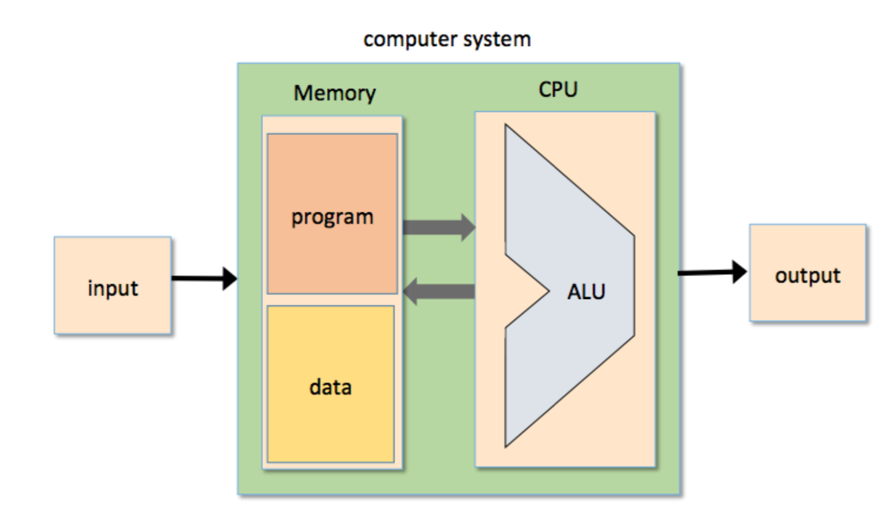
The von Neumann machine is a practical architecture and the conceptual blueprint of almost all computer platforms today.
At the heart of this architecture lies the stored program concept: The computer’s memory stores not only the data that the computer manipulates, but also the very instructions that tell the computer what to do. Let us explore this architecture in some detail.
Memory
Physical Perspective
the memory is a linear sequence of addressable registers, each having a unique address and a value, which is a fixed-size word of information.
Logical Perspective
he memory is divided into two areas. One area is dedicated for storing data,e.g. the arrays and objects of programs that are presently executing, while the other area is dedicated for storing the programs’ instructions.
Data Memory
High-level programs manipulate abstract artifacts like variables, arrays, and objects. After the programs are translated into machine language, these data abstractions become binary codes, stored in the computer’s memory. Once an individual register has been selected from the memory by specifying its address, its contents can be either read or written to.
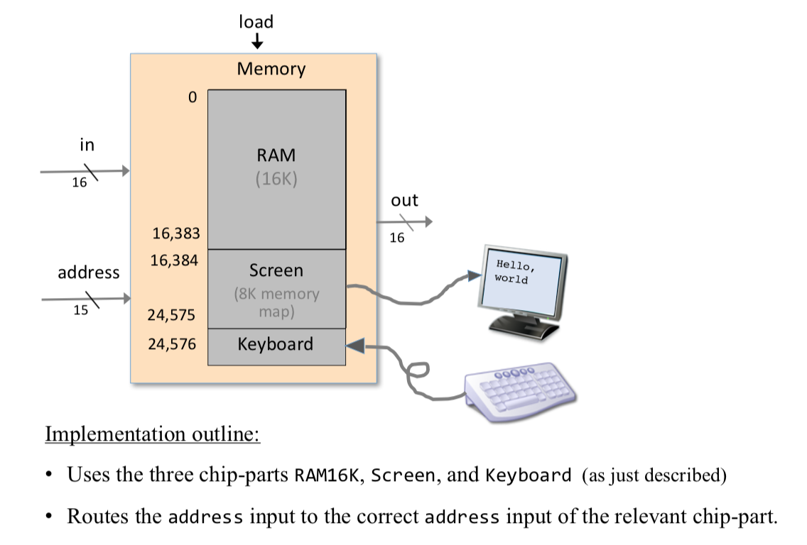
Instruction Memory
Before high-level programs can be executed on the computer, they must be translated into machine language. These instructions are stored in the computer’s instruction memory as binary codes. In each step of a program’s execution, the CPU fetches (i.e., reads) a binary machine instruction from a selected register in the instruction memory, decodes it, executes the specified instruction, and figures out which instruction to fetch and execute next.
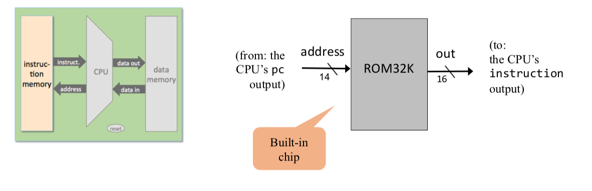
1 | // This file is part of www.nand2tetris.org |
Central Processing Unit(CPU)
The CPU—the centerpiece of the computer’s architecture—is in charge of executing the instructions of the currently loaded program. The CPU executes these tasks using three main hardware elements: an Arithmetic-Logic Unit (ALU), a set of registers, and a control unit.
The CPU operation can be described as a repeated loop: decode the current instruction, execute it, figure out which instruction to execute next, fetch it, decode it, and so on. This process is sometimes referred to as the fetch-execute cycle.
Fetching
- Put the location of the next instruction in the Memory address input
- Get the instruction code by reading the contents at that Memory location
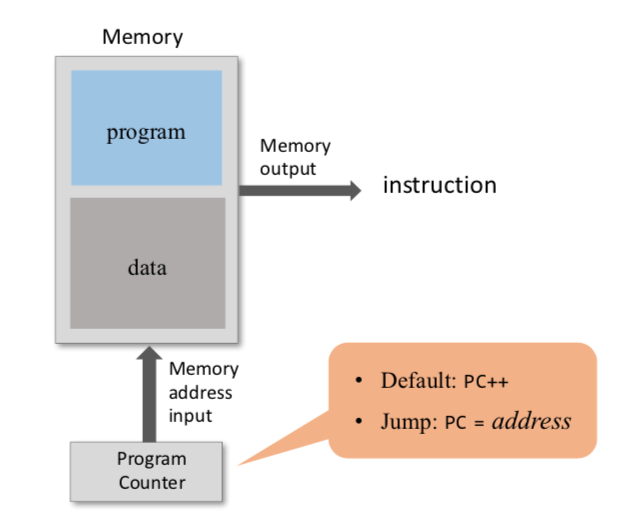
Executing
The instruction code specifies what to do
- Which arithmetic or logical instruction to execute
- Which memory address to access (for read / write)
- If / where to jump
- ……
Executing the instruction involves:
- accessing registers
- accessing the data memory.
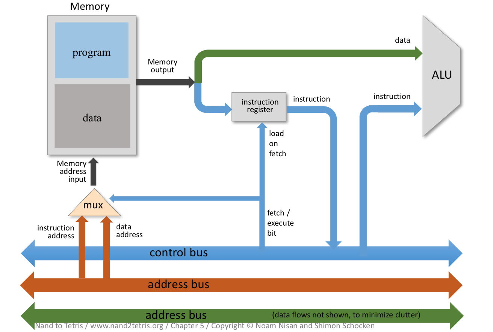
Arithmetic Logic Unit
- perform all the low-level arithmetic and logical operations
- Any function not supported by the ALU as a primitive hardware operation can be later realized by the computer’s system software
Registers
- store the intermediate results(rather than ship them in and out of the CPU chip and store them in RAM chip)
- typically equipped with a small set of 2 up to 32 resident high-speed registers, each capable of holding a single word.
Control Unit
- decoded binary instructions
- signal various hardware devices (ALU, registers, memory) how to execute the instructions.
CPU Operation
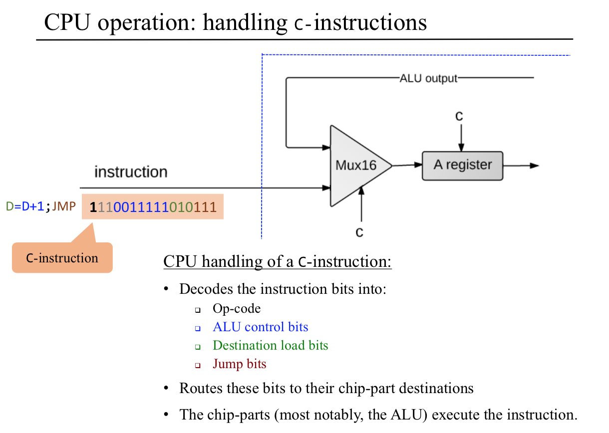
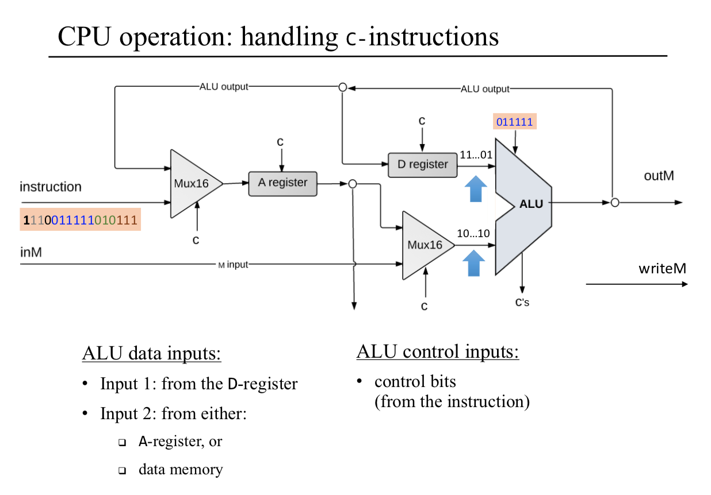
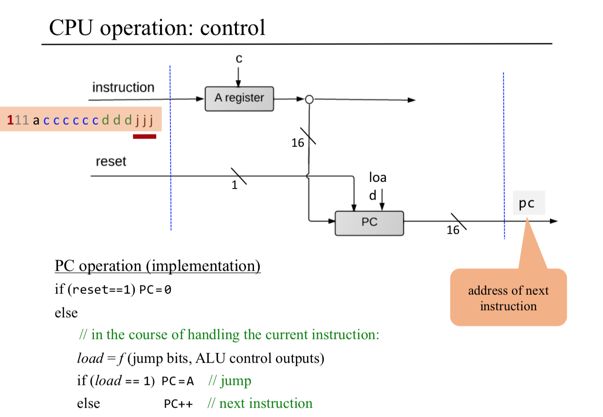
1 | // This file is part of www.nand2tetris.org |
Registers
CPU-resident registers save unnecessary memory access, and allow using thinner instruction formats, resulting in faster throughput.(saved ourselves a great deal of time and overhead)
Data registers
- calculate (a − b)*c, temporary result(a - b) can be stored in some memory register.
- Typically, CPU’s use at least one and up to 32 data registers.
Address registers
- the output of an address register is typically connected to the address input of a memory device.
- set Memory[17] to 1. First set A=17(@17), followed by M=1(M mnemonic stand for Memory[17])
- In addition to supporting this fundamental addressing operation, an address register is, well, a register. Therefore, if needed, it can be used as yet another data register. D=17( @17, D=A)
Program counter
When executing a program, the CPU must always keep track of the address of the instruction that must be fetched and executed next. This address is kept in a special register called program counter.
Input and Output
computer scientists have devised clever schemes to make all these different devices look exactly the same to the computer. The key trick in managing this complexity is called memory-mapped I/O.
- The basic idea is to create a binary emulation of the I/O device, making it “look” to the CPU as if it were a regular memory segment.
- each I/O device is allocated an exclusive area in memory, becoming its “memory map.”
- the data that drives each I/O device must be serialized. example: 2-dimensional grid of pixels, must be mapped on a 1-dimensional vector of fixed-size memory registers.
Screen
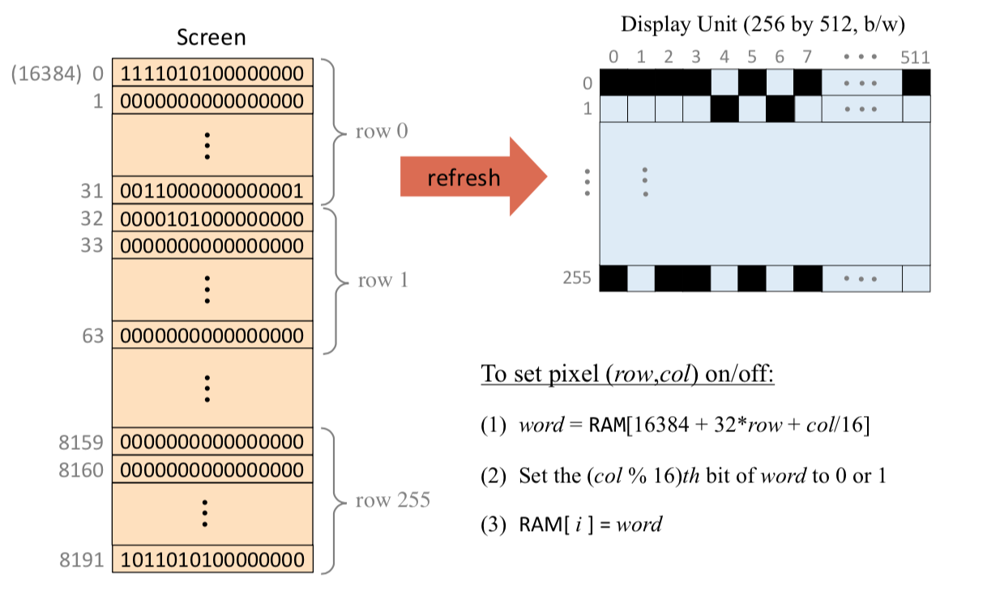
Keyboard
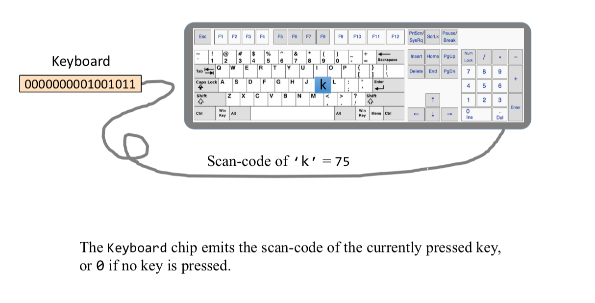
Hack Computer implementation
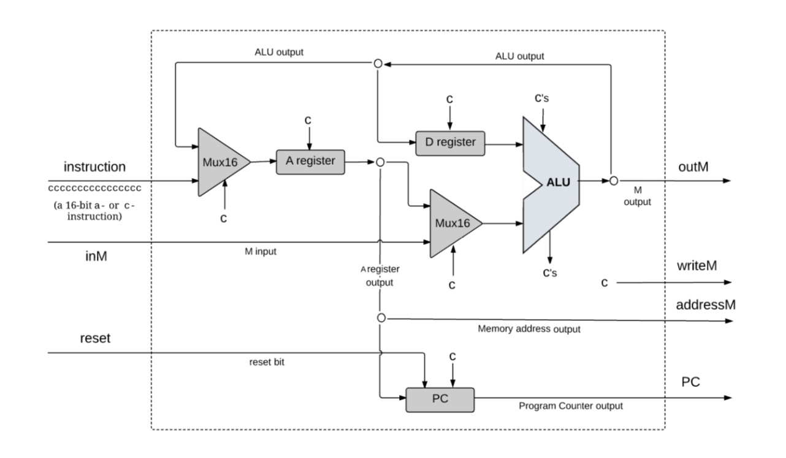
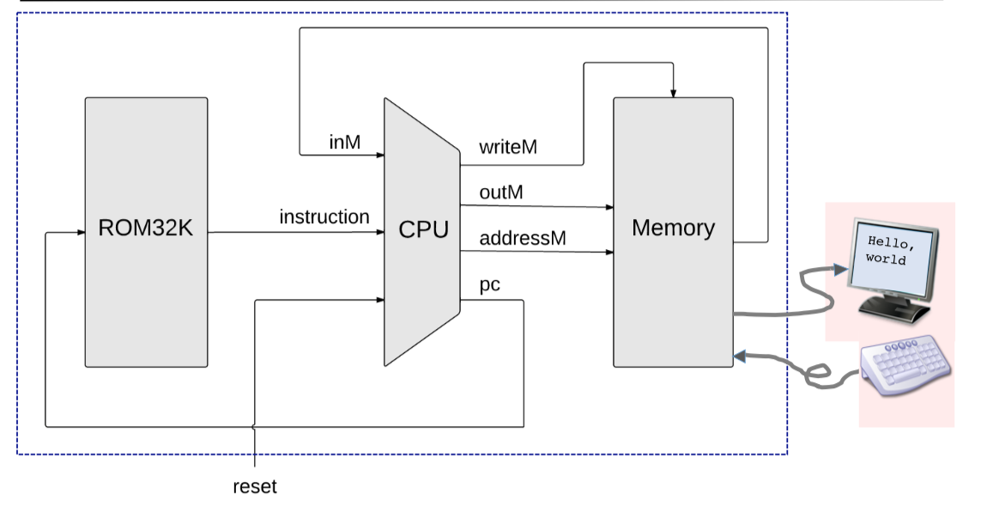
1 | // This file is part of www.nand2tetris.org |